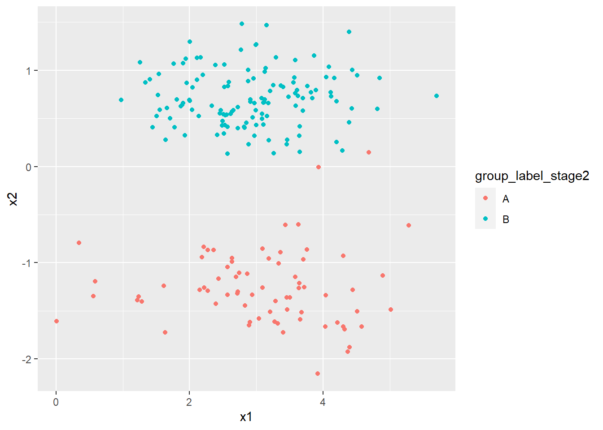

Chapter 16 Machine learning
16.1 Learning Objectives
- Explain the main branches of machine learning and describe examples of the types of problems typically addressed by machine learning.
- Explain and apply high-level concepts relevant to learning from data.
- Describe and give examples of key supervised and unsupervised machine learning techniques, explaining the difference between regression and classification and between generative and discriminative models.
- Explain in detail and use appropriate software to apply machine learning techniques (e.g. penalised regression and decision trees) to simple problems.
- Demonstrate an understanding of the perspectives of statisticians, data scientists, and other quantitative researchers from non-actuarial backgrounds.
16.2 Theory
TO ADD THEORY ABOUT MACHINE LEARNING HERE
16.2.1 Machine learning topics
16.2.2 Machine learning from data
16.2.3 Supervised machine learning
16.2.4 Unsupervised machine learning
16.2.5 Penalised regression
16.2.6 Decision trees
16.2.7 Perspectives of non-actuarial professionals
16.3 R Practice
We are managing a portfolio of investments that contains 200 assets. In this portfolio we measure the following features:
- Price-to-Earnings Ratio (“PE”), labelled \(x1\) with \(x1 \sim \mathcal{N}(3,\,1)\)
- Price-to-Book Ratio (“PB”), labelled \(x2\) with 65% of the assets following \(\mathcal{N}(10,\,1)\) and the remaining 35% following \(\mathcal{N}(4,\,1)\)
We replicate this in R as follows:
library(dplyr) # Data manipulation
set.seed(42) # Fix result
portfolio <- data.frame(
x1 = rnorm(200, 3, 1),
x2 = scale(
c(
rnorm(70, 4, 1),
rnorm(130, 10, 1)
)
)
)
glimpse(portfolio)## Rows: 200
## Columns: 2
## $ x1 <dbl> 4.3709584, 2.4353018, 3.3631284, 3.6328626, 3.4042683, 2.8938755...
## $ x2 <dbl> -1.9258826, -1.1653603, -0.8925320, -0.6031994, -1.7225948, -1.6...Here the scale() function scales each element in the result by subtracting the sample mean and dividing by the sample standard deviation.
Next we want to explore whether these 200 assets can be divided into two clusters which we will label arbitrarily A and B based on the two metrics we have measured, PE (as \(x1\)) and PB (as \(x2\)).
We will first assign the assets evenly into these two clusters:
group_label_stage1 <- c(
rep("A", 100),
rep("B", 100)
)
portfolio <- portfolio %>%
mutate(group_label_stage1 = group_label_stage1)
ClusterACentre <- c(
mean(portfolio$x1[portfolio$group_label_stage1 == "A"]),
mean(portfolio$x2[portfolio$group_label_stage1 == "A"])
)
ClusterBCentre <- c(
mean(portfolio$x1[portfolio$group_label_stage1 == "B"]),
mean(portfolio$x2[portfolio$group_label_stage1 == "B"])
)
glimpse(portfolio)## Rows: 200
## Columns: 3
## $ x1 <dbl> 4.3709584, 2.4353018, 3.3631284, 3.6328626, 3.40...
## $ x2 <dbl> -1.9258826, -1.1653603, -0.8925320, -0.6031994, ...
## $ group_label_stage1 <chr> "A", "A", "A", "A", "A", "A", "A", "A", "A", "A"...We have:
- The centre of cluster
A, given by \((x1_A,\, x2_A)\) is 3.033, -0.691, and - The centre of cluster
B, given by \((x1_A,\, x2_A)\) is 2.913, 0.691.
Next we want to calculate the Euclidean distance between:
- \((x1, x2)\) and the centre of cluster
A, and - \((x1, x2)\) and the centre of cluster
B.
We will label these distances as dist_A and dist_B respectively.
The Euclidean distance is defined as:
- For
dist_A: \(\sqrt{(x1-x1_A)^2+(x2-x2_A)^2}\), and - For
dist_B: \(\sqrt{(x1-x1_B)^2+(x2-x2_B)^2}\).
dist_A <- sqrt(
(portfolio$x1 - ClusterACentre[1])^2
+ (portfolio$x2 - ClusterACentre[2])^2
)
dist_B <- sqrt(
(portfolio$x1 - ClusterBCentre[1])^2
+ (portfolio$x2 - ClusterBCentre[2])^2
)
portfolio <- portfolio %>%
mutate(
dist_A = dist_A,
dist_B = dist_B
)
glimpse(portfolio)## Rows: 200
## Columns: 5
## $ x1 <dbl> 4.3709584, 2.4353018, 3.3631284, 3.6328626, 3.40...
## $ x2 <dbl> -1.9258826, -1.1653603, -0.8925320, -0.6031994, ...
## $ group_label_stage1 <chr> "A", "A", "A", "A", "A", "A", "A", "A", "A", "A"...
## $ dist_A <dbl> 1.8210075, 0.7626050, 0.3871328, 0.6067517, 1.09...
## $ dist_B <dbl> 2.995957, 1.916835, 1.646514, 1.481271, 2.463299...Now we will update the cluster labels (A and B) by assigning to each asset the label of the cluster whose centre is nearest from dist_A and dist_B.
portfolio <- portfolio %>%
mutate(
group_label_stage2 = ifelse(portfolio$dist_A <= portfolio$dist_B, "A", "B")
)
glimpse(portfolio)## Rows: 200
## Columns: 6
## $ x1 <dbl> 4.3709584, 2.4353018, 3.3631284, 3.6328626, 3.40...
## $ x2 <dbl> -1.9258826, -1.1653603, -0.8925320, -0.6031994, ...
## $ group_label_stage1 <chr> "A", "A", "A", "A", "A", "A", "A", "A", "A", "A"...
## $ dist_A <dbl> 1.8210075, 0.7626050, 0.3871328, 0.6067517, 1.09...
## $ dist_B <dbl> 2.995957, 1.916835, 1.646514, 1.481271, 2.463299...
## $ group_label_stage2 <chr> "A", "A", "A", "A", "A", "A", "A", "A", "A", "A"...Let’s generate a 2x2 matrix showing the number of assets with each possible combination of values from group_label_stage1 and group_label_stage2:
combos <- portfolio %>%
count(group_label_stage1, group_label_stage2)
matrix(
combos$n,
nrow = 2,
dimnames = list(
c("A", "B"),
c("A", "B")
)
)## A B
## A 71 1
## B 29 99Finally let’s plot x1 and x2 coloured using the latest clustering labelling:
